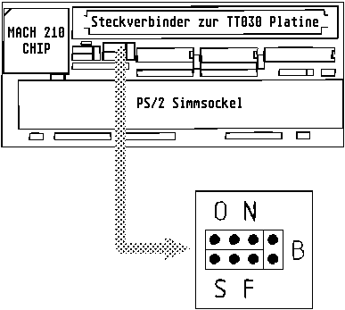

Previous
Next
TOC
Die MagnumTT 2 Fastramkarte
Die MagnumTT Fastramkarte kann im gegensatz zur AixTT FAST-RAM Erwei-
terung mit bis zu 256 MB Ram best・kt werden k�nnen. Der n臘hste
Unterschied ist der das die MagnumTT andere Multiplexer Bausteine ver-
wendet (74FCT statt 74F), das kann bei
kritischen SIMMs einen Unter-
schied machen und die ganz aktuellen Karten k�nnen erst mit PS/2
Simms umgehen die mindestens 16MB haben, daf・ werden jetzt halt
auch 64/128MB-Module unterst・zt.

Jumperbelegung
Achtung: Es d・fen NUR 32MB
SIMMs verwendet werden, die
folgende Aufschrift haben:
O
N
xx174xx
+-----+-+
|* * *|*| B
Niemals d・fen 32MB SIMMs
|* * *|*|
eingesetzt werden die folgen-
+-----+-+
de Aufschrift haben:
S
F
xxx164xx
(Diese SIMMs sind anders orga-
nisiert und brauchen daher
Funktion
Jumper
eine Adreﾟleitung mehr!)
Standard Mode for
normal SIMMs O
Der Speicherausbau
Special mode for
Bank 0
Bank1
difficult SIMMs N
4 MB
4/0 MB
8 MB
0/4/8 MB
Refresh slow (
2k-Refresh),
16 MB
0/4/8/16 MB
faster Access
S
32 MB
0/4/8/16/32 MB
Refresh fast (
4k-Refresh),
Die Bank 0 wird immer zuerst
slower Access
F
best・kt, bei verwendung von
2 SIMM Modulen wird das gr・
Never Set (Burstmode on/off)
B
ﾟere in die Bank 0 gesteckt!
Die Bank 0 ist am MACH Chip.
Kapitel Die MagnumTT Fastramkarte, Seite 1